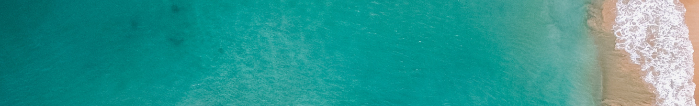

La tua Fisher-Area
Questo è ciò che vede il tuo Fisherbot
Fishometro
Pienezza del serbatoio e quantità di microplastiche raccolte (in tempo reale)

70%
50 Kg
Chilogrammi di plastica raccolti al giorno 17 novembre 2022
Geolocalizzazione
Dove si trova il tuo Fisherbot
- Coordinate
36°07'30"N 11°57'14"W - Continente
Europa - Oceano/mare
Oceano Atlantico Settentrionale - Profondità
-300 m